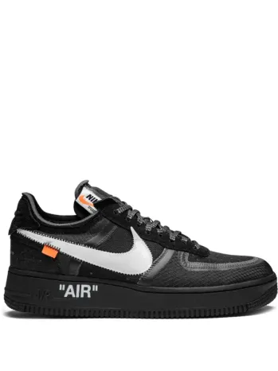

A Nike sneakerek berobbanására mindenki felfigyelt, hamarosan létrejöttek az első kollboracációk. Az évtizedek során számos kollaboráció jelent meg, ezek közül csak a legismertebekket fogom felsorolni. Az egyik legismertebb és legjobban kedvelt kollaboráció a Nike x Off-White volt. Az Off-White egy luxus streetwear márka, amit 2012-ben Virgil Abloh hozott létre, aki emellett a világhírű Louis Vuitton kreatív igazgatója volt. Ez a kollaboráció 10 klasszikus modellt tartalmazott, köztük Air Jordan 1-ek, Air Max 90-ek, Air Force 1-ek és Air Jordan 4-ek. Kiadásuk után nemsokkal a sneakerkultúra modern klasszikusa lett. A legendás cipők felett lévő "Hype" nagyobb lett, amikor 2021-ben, mindössze 41 évesen elhunyt az Off-White létrehozója, Virgil Abloh.

A következő kollaboráció sem volt kis hírű. A Nike és a világhírű amerikai rapper Travis Scott a mai dobálják ki az újabbnál-újabb cipőket és ruhákat. Amikor egy ilyen híres márka és rapper összeáll, és piacra dob termékeket, nem csoda, hogy perceket belül elfogy az összes példány. A Nike x Off-White kollabhoz képest sokkal több pólót és pulóvert ad ki, mint Virgil Abloh. Viszont érdemes megemlíteni a kiadott cipők közűl pár modellt: Air Jordan 1 Reverse Swoosh (A cipőn lévő N ike logó (Pipa/Swoosh) fordítva van a cipőn. Ez az egyetlen modell, amin direkt így van.), Air Max 270, Air Jordan 4, Air Jordan 6, Nike SB (Skateboard) Dunk, Air Force 1. Az első közös termék 8 éve, 2017-ben került ki a piacra, és az érdeklődők száma tekintetében nem valószínű, hogy a közeljövőben elválnak egymástól.
A felsoroltakon kívűl még számos kollaboráció van, viszont az utolsónak egy különlegeset választottam, ami a Nike és a legendás New York-i streetwear márka, a Supreme kollaborációja. A 2000-es évek elején elkezdtek dolgozni, és pár év múlva, 2002-ben, piacra is dobták az első terméküket, ami egy SB Dunk volt. Az elmúlt 23 évben közel az összes közös termék instant elfogyott. Sok ember figyelmét kapták fel a merész, szokatlan designok. Itt is érdemes megemlíteni pár modellt: SB Dunk, Air Max 98, Air Force 1, Foamposite.